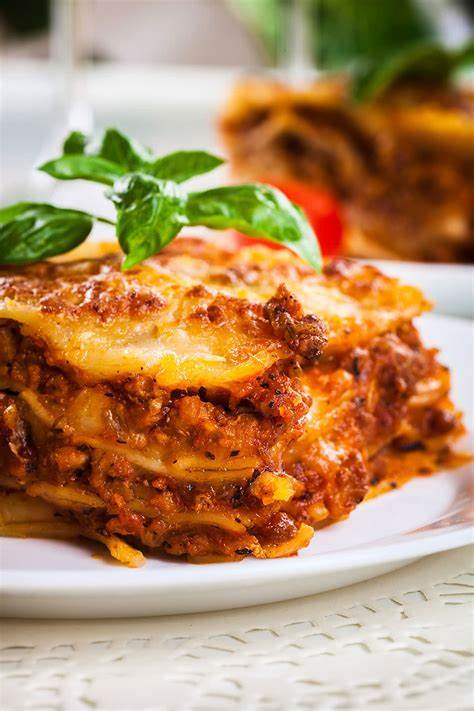

lasagna

description
a quick, easy and tasty meal with the recipes below
- 1 pound -Lean Ground Beef
- 1 (32 ounce) jar Spaghetti Sauce
- 32 ounces Cottage Cheese
- 3 cups Mozzarella Cheese (shredded, divided)
- 2 Eggs
- ½ cup Parmesan Cheese (grated)
- 2 teaspoons Dried Parsley
- add Salt
- add Black Pepper (ground)
- 9 Lasagna Noodles
- ½ cup Water
steps
- 1. Preheat the oven to 350 degrees F (175 degrees C).
- Heat a large skillet over medium-high heat. Cook and stir ground beef in the hot skillet until browned and
crumbly, 8 to 10 minutes. Drain and discard grease. Stir in spaghetti sauce and simmer for 5 minutes.
- Combine cottage cheese, 2 cups of mozzarella cheese, eggs, 1/2 of the grated Parmesan cheese, dried parsley,
salt, and pepper in a large bowl.
- Spread 3/4 cup of sauce in a 9x13-inch baking dish. Cover with 3 uncooked lasagna noodles, 1 3/4 cups of cheese
mixture, and 1/4 cup sauce; repeat layers once more. Top with remaining 3 noodles, sauce, mozzarella, and Parmesan
cheese. Pour 1/2 cup water along the edges of the dish. Cover tightly with aluminum foil.
- Bake in the preheated oven for 45 minutes. Uncover and bake for an additional 10 minutes. Let stand 10 minutes
before serving.